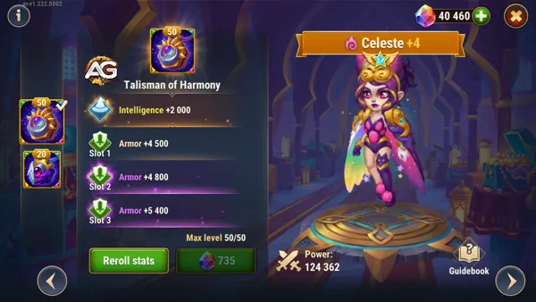
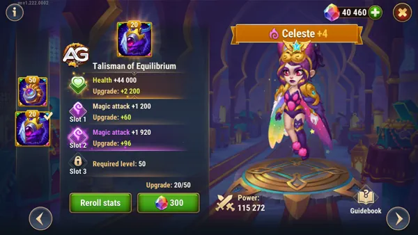
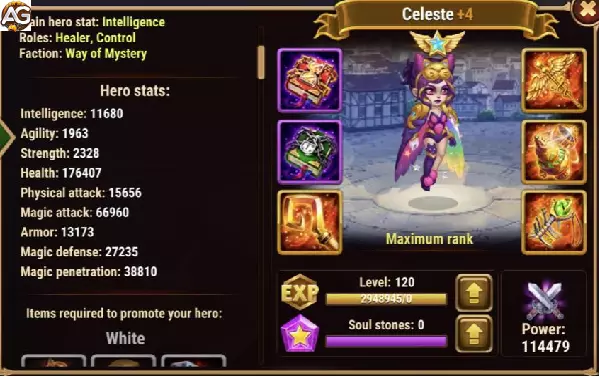

Um Guia Completo de Celeste em Hero Wars Alliance
- Por: Alexandre Domingos. .
Domine Celeste em Hero Wars Alliance! Explore suas formas duais de Luz e Trevas, principais estratégias, sinergias de equipe e melhorias de Talismã. Aprenda a enfrentar inimigos, dominar Hidras e montar as melhores equipes para maximizar seu raro potencial no campo de batalha!
Em um universo repleto de batalhas épicas e heróis lendários, alguns se destacam como verdadeiras joias raras. Entre eles, Celeste brilha como uma das personagenss mais cobiçadas em Hero Wars Alliance. Com um conjunto de habilidades únicas e uma versatilidade incomparável, Celeste se tornou um elemento essencial em muitas equipes vencedoras.
Neste guia completo, vamos explorar as estratégias fundamentais para dominar o uso de Celeste e maximizar seu potencial no campo de batalha.

| Atributos Principais | Detalhes |
| Posição: | Linha do meio |
| Função: | Curandeiro, Corte de Cura |
| Classe de Glifo: | Suporte |
| Estatísticas principal: | Inteligência |
| Facção: | Mistério |
| Como conseguir: | Eventos, baú heroico |
| Tier List 2025 | Ranque |
| Tier List Geral: | A+ |
| Tier List de Hidra: | A+ |
A Raridade de Celeste e sua Importância
Celeste é um dos três heróis mais raros em Hero Wars Alliance, ao lado de Machadinha e Jet. Sua raridade é destacada pelo fato de que as pedras de Alma necessárias para fortalecê-la só podem ser adquiridas em baús heroicos ou durante Eventos Especiais. No entanto, sua raridade é compensada por um conjunto de habilidades extraordinárias que a tornam uma escolha valiosa para qualquer equipe.
A Dualidade de Celeste: Forma Clara e Forma Escura
Uma das características mais distintas de Celeste é sua habilidade de alternar entre uma forma clara e uma forma escura. Em sua forma escura, ela tem a capacidade de bloquear a cura dos inimigos, enquanto em sua forma clara, ela pode curar aliados, limpar efeitos negativos e atacar com grande eficiência. Essa dualidade faz dela uma personagem extremamente versátil, capaz de se adaptar a diversas situações de combate.
Utilizando o Limbo a seu Favor
A habilidade Limbo de Celeste é uma de suas ferramentas mais poderosas. Com ela, Celeste pode remover todos os tipos de efeitos negativos de seus aliados, oferecendo suporte crucial em momentos críticos da batalha. Essa habilidade é especialmente eficaz contra equipes que dependem de efeitos de controle, como os times liderados por Qing Mao e Sebastian, onde a remoção de maldições pode ser a diferença entre a vitória e a derrota.
Celeste nas Principais Equipes
Devido à sua versatilidade e eficácia, Celeste é frequentemente encontrada nas principais equipes de Hero Wars Alliance. Mesmo sem acesso a heróis como Martha, Celeste é uma escolha sólida e confiável para fortalecer qualquer equipe. Sua capacidade de oferecer suporte, controle e dano a torna uma adição valiosa em qualquer formação.
Maximizando o Potencial de Celeste
Investir no desenvolvimento de Celeste é crucial para desbloquear todo o seu potencial. Priorizar suas habilidades e melhorias, como o Talismã de Celeste, pode torná-la ainda mais formidável no campo de batalha. Com inteligência estratégica e investimento adequado, Celeste pode se tornar uma força imparável que guiará sua equipe rumo à vitória.
Desvendando o Poder de Celeste
Celeste é muito mais do que apenas uma personagem rara em Hero Wars Alliance - ela é uma peça-chave para o sucesso em batalhas épicas. Com suas habilidades versáteis, capacidade de oferecer suporte e habilidade de causar dano, ela se destaca como uma escolha indispensável para qualquer equipe. Dominar o uso de Celeste requer compreensão, estratégia e investimento, mas os resultados valem a pena. Então, prepare-se para desbravar o campo de batalha com Celeste ao seu lado e alcance a glória em Hero Wars Alliance.
Análise dos Talismãs de Celeste em Hero Wars Alliance
Celeste é uma heroína versátil, capaz de curar aliados ou cortar a cura inimiga, tornando-se um componente crítico em muitas equipes. Vamos explorar seus dois talismãs e avaliar qual deles complementa melhor suas habilidades.
Talisman da Harmonia
O Talisman da Harmonia é o primeiro talismã de Celeste e se concentra em melhorar sua sobrevivência, especialmente contra danos físicos.
| Slot | Estatísticas | Pontos |
|---|---|---|
| 0 | Inteligência | +2000 |
| 1 | Armadura | +6600 |
| 2 | Armadura | +6600 |
| 3 | Armadura | +6600 |
Principais Características:
- Bônus de Inteligência: Melhora o principal atributo de Celeste, aumentando seu Ataque Mágico e desempenho geral.
- Bônus de Armadura: Proporciona maior Defesa Física, tornando Celeste mais resistente contra atacantes físicos.

Impacto em Celeste:
- Durabilidade Melhorada: O bônus de armadura permite que Celeste suporte melhor ameaças físicas, vital para sua posição entre a linha média e a linha de frente.
- Impulso no Ataque Mágico: Embora a Inteligência contribua para o Ataque Mágico, o impacto é menos direto comparado a bônus que se concentram puramente no poder de ataque.
Embora o Talisman da Harmonia melhore a sobrevivência de Celeste, ele não aprimora significativamente suas habilidades de cura ou dano, tornando-o menos ideal para maximizar seu papel de suporte.
Talisman do Equilíbrio
O Talisman do Equilíbrio é o segundo talismã de Celeste e se concentra em melhorar suas capacidades ofensivas e de cura, além de sua sobrevivência geral.

Principais Características:
- Bônus de Vida: Adiciona uma quantidade significativa de Vida, tornando Celeste mais resistente contra danos físicos e mágicos.
- Slots de Ataque Mágico: Inclui até 3 slots para bônus de Ataque Mágico, aumentando significativamente sua cura e dano.
Impacto em Celeste:
- Melhoria nas Habilidades de Cura: O Ataque Mágico é crucial para as curas de Celeste e sua capacidade de bloquear a cura inimiga. O bônus permite que ela:
- Proporcione curas mais eficazes na Forma de Luz.
- Bloqueie a cura inimiga com mais eficiência na Forma de Escuridão.
- Utilidade Aprimorada: Suas habilidades escalam significativamente com Ataque Mágico:
- Luz Lunar (Primeira Habilidade): Cura na Forma de Luz e bloqueio de cura na Forma de Escuridão são amplificados.
- Anão Branco (Segunda Habilidade): Proporciona curas mais fortes e bloqueia a cura inimiga de maneira mais eficaz.
- Aumento na Sobrevivência: O aumento de Vida garante que Celeste possa se manter mais tempo em combate, dando mais suporte à sua equipe.
O Talisman do Equilíbrio oferece o equilíbrio perfeito entre ataque e defesa, alinhando-se ao papel de Celeste como curadora e heroína de suporte.
Comparação e Resumo dos Talismãs
Talisman da Harmonia:
- Foca em Inteligência e Armadura para melhorar a resistência de Celeste contra danos físicos.
- Mais adequado para situações onde Celeste enfrenta muitas ameaças físicas, mas carece de melhorias ofensivas significativas.
Talisman do Equilíbrio:
- Proporciona Vida e Ataque Mágico, tornando-o superior para aumentar o potencial de cura e suporte de Celeste.
- Melhora sua sobrevivência contra danos físicos e mágicos enquanto amplifica a eficácia de suas habilidades.
Qual Talismã Priorizar para Celeste?
O Talisman do Equilíbrio é a melhor escolha para Celeste, pois melhora significativamente sua cura, utilidade e sobrevivência geral. Ele é especialmente valioso em batalhas onde Celeste precisa sustentar sua equipe enquanto neutraliza curadores inimigos.
Se você só puder melhorar um talismã, priorize o Talisman do Equilíbrio para maximizar o potencial de Celeste como heroína de suporte em Hero Wars Alliance.
Prós e Contras de Celeste
| Pontos Positivos | |
|---|---|
| Remove todos os tipos de efeitos negativos | |
| Bloqueia a cura dos inimigos | |
| Requer apenas 50% de energia para ativar o artefato | |
| Pontos Negativos | |
|---|---|
| Na forma escura, causa dano em vez de curar aliados | |
| Difícil de obter pedras de alma | |
| Resistência baixa | |
Prioridades de Evolução de Celeste
Glifos
Nos glifos de Celeste priorize subir de nível, perfuração mágica, ataque mágico e inteligência para aumentar o dano e o corte de cura, depois vida para ter mais sobrevivência. E por último, defesa mágica.
| Prioridades | Glifos |
|---|---|
| 1ª | Perfuração Magica |
| 2ª | Ataque Mágico |
| 3ª | Inteligência |
| 4ª | Vida |
| 5ª | Defesa Mágica |
Artefatos
Nos Artefatos de Celeste a prioridade é o livro para aumentar a perfuração mágica e o ataque mágico. Depois a arma para ganhar mais ataque mágico para Celeste e para o time todo, lembrando que Celeste ativa o artefato com 50% de energia e dura metade do tempo, dessa forma ela está o tempo todo ativando o artefato e curando e bloqueando cura de inimigos. E por último o anel para ganhar mais ataque mágico e defesa mágica.
| Prioridades | Artefatos |
|---|---|
| 1ª | Livro |
| 2ª | Arma (Ataque mágico) |
| 3ª | Anel |
Visuais
Nos visuais da Celeste, priorize a Super Skin para aumentar a penetração mágica, seguida pelo ataque mágico e inteligência para amplificar a produção de dano. Em seguida, concentre-se na saúde para resiliência e, por fim, dê prioridade à defesa mágica e armadura. É crucial observar que, para tankar efetivamente as hidras lendárias com Celeste, as skins de defesa devem ser niveladas até pelo menos o nível 55.
| Prioridades | Visuais |
|---|---|
| 1ª | Perfuração Mágica(super) |
| 2ª | Ataque Mágico |
| 3ª | Inteligência |
| 4ª | Vida |
| 5ª | Armadura |
| 6ª | Defesa Mágica |

Celeste vs Hidras
Celeste é um excelente herói para hidras e normalmente é utilizada como tanque, porém para que seja usada nas hidras como tanque você deve primeiramente deixá- la bem forte. Nas Hidras lendárias Celeste somente terá resistência após subir sua defesa no máximo, isso se aplica para visuais, glifos e artefatos.
- Equipe de Celeste para Hidra da Terra: Martha, Isaac, Mojo, Jhu, Celeste (Dano: 17M a 21M)
Celeste em Batalhas
Forte Contra
- Dorian, Iris, Q.Mao, Satori, Karkh, Sebastião, Martha, Markus, Maya, Jorgen, Ziri, Galahad, Machadinha
Counters
- Rufus, Cornelius, Fobos, Amira
| Time | Heróis |
|---|---|
| 1 | Astrid, Isaac, Celeste, Juiz, Julius |
| 2 | Sem Rosto, Jorgen, Celeste, Satori, Astaroth |
| 3 | Phobos, Sem Rosto, Amira, Jorgen, Celeste |
| 4 | Martha, Jorgen, Celeste, Satori, Astaroth |
| 5 | Sem Rosto, Amira, Celeste, Satori, Astaroth |
| 6 | Amira, Jorgen, Celeste, Satori, Astaroth |
| 7 | Helios, Sem Rosto, Jorgen, Celeste, Astaroth |
| 8 | Helios, Sem Rosto, Amira, Celeste, Astaroth |
| 9 | Sem Rosto, Jorgen, Celeste, K'arkh, Astaroth |
| 10 | Lars, Jorgen, Celeste, Krista, Astaroth |
| 11 | Sem Rosto, Lars, Celeste, Krista, Astaroth |
| 12 | Lars, Amira, Jorgen, Celeste, Krista |
Conclusão de Destinos Entrelaçados de Celeste
Ao concluir a jornada através das páginas do guia da Celeste em Hero Wars Alliance, fica evidente que a dualidade entre a escuridão e a luz é um tema recorrente que permeia não apenas suas habilidades, mas também sua trajetória. A primeira e segunda fases, marcadas por "Dois Destinos" e "Noite Clara", delineiam a natureza intrínseca dessa dualidade, onde a cura bloqueada na forma de escuridão contrasta com a restauração da saúde na forma de luz, revelando a complexidade de suas habilidades.
Entretanto, é na terceira fase, intitulada "Limbo", que a verdadeira essência da Celeste se desvenda. Aqui, a transformação da cura bloqueada em dano mágico na forma de escuridão é contrabalançada pela habilidade de reduzir a chance de bloquear um debuff na forma de luz, dependendo do nível do oponente. Essa dualidade expressa não apenas a batalha entre forças opostas, mas também a necessidade de adaptação e equilíbrio em situações desafiadoras.
Finalmente, na quarta e última fase, "Zênite", o ápice do poder da Celeste é revelado. Seja desferindo um devastador dano mágico na forma de escuridão ou restaurando a saúde de forma significativa na forma de luz, sua presença no campo de batalha transcende as fronteiras entre o bem e o mal, demonstrando que, no final das contas, o verdadeiro poder reside na capacidade de compreender e dominar as dualidades que habitam dentro de si mesma.
Assim, ao fechar as páginas deste guia, é claro que a jornada da Celeste em Hero Wars Alliance não é apenas uma saga de batalhas épicas, mas também uma exploração profundamente pessoal sobre os destinos entrelaçados da luz e da escuridão, e como o equilíbrio entre os dois pode moldar o curso do universo.
Sugestões de Vídeo:
Celeste como subir de nível
Você pode ter interesse:


Deixe Sua Opinião!
Você gostou das nossas dicas do Guia da Celeste? Há algo que não entendeu ou gostaria de sugerir mudanças? Convidamos você a se juntar à nossa sessão de comentários na página do Alexandre Games Blog. Não hesite em expressar sua opinião, clarificar suas dúvidas e compartilhar sua sugestões.
Clique no botão abaixo para começar: